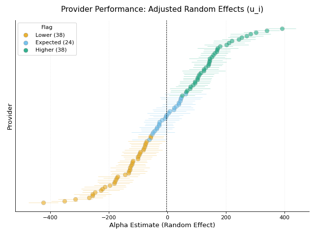
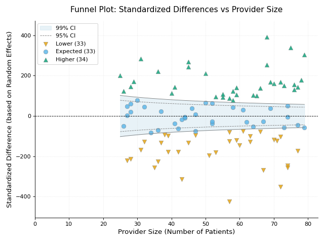
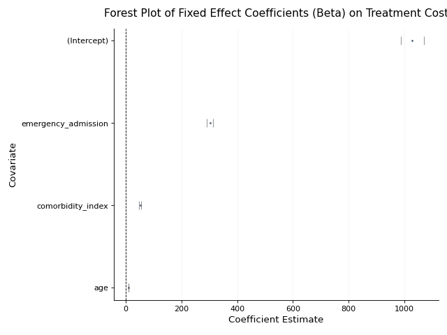
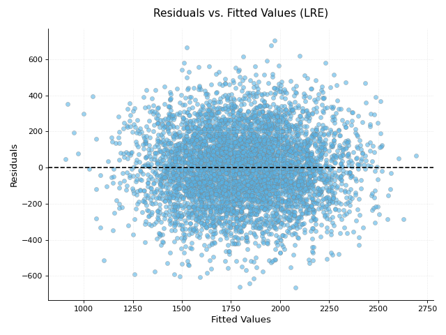
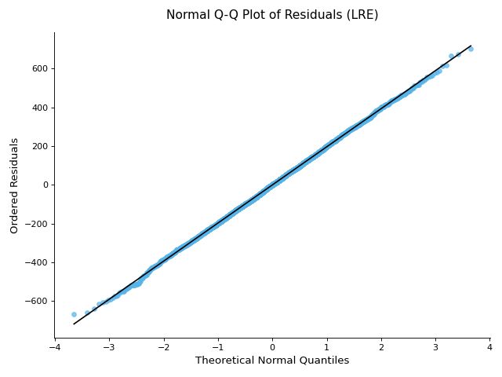

Using the Linear Random Effect Model for Provider Profiling
Introduction
This tutorial will guide you through using the LinearRandomEffectModel from the pprof_py package. This model is suitable for provider profiling when you have a continuous (quantitative) outcome and want to model provider variation as random effects. This approach is particularly useful when you have many providers and you want to “borrow strength” across them, or when you consider providers as a sample from a larger population of providers.
The Linear Random Effect Model (often a type of Mixed-Effects Model) typically models an outcome \(Y_{ij}\) for patient \(j\) at provider \(i\) as:
Where:
\(\mathbf{X}_{ij}^\top\boldsymbol\beta\) represents the fixed effects of patient-level covariates.
\(u_i\) is the random effect for provider \(i\), typically assumed \(u_i \sim N(0, \sigma_u^2)\).
\(\epsilon_{ij}\) is the random error, typically assumed \(\epsilon_{ij} \sim N(0, \sigma_e^2)\).
This tutorial focuses on fitting the model, understanding its outputs (both fixed and random effects), and visualizing the results.
1. Getting Started: Fitting Your First Model
Let’s begin by importing necessary libraries, preparing some example data, and fitting the model.
1.1. Import Libraries
You’ll primarily need pandas for data manipulation and the LinearRandomEffectModel itself.
import pandas as pd
import numpy as np
from pprof_py import LinearRandomEffectModel
import matplotlib.pyplot as plt
print("Libraries imported.")
1.2. Prepare Your Data
The model expects your data in a pandas DataFrame with:
* An outcome variable column.
* One or more covariate columns (fixed effects).
* A group variable column (for random effects, e.g., provider identifiers).
Here’s how you can simulate some data:
# Simulate data for demonstration
np.random.seed(123)
n_providers = 100
n_patients_per_provider = np.random.randint(25, 80, n_providers)
n_total_patients = np.sum(n_patients_per_provider)
provider_ids_list = []
for i, count in enumerate(n_patients_per_provider):
provider_ids_list.extend([f"Hospital_{i+1}"] * count)
data_re = pd.DataFrame({
'patient_id': range(n_total_patients),
'provider_id': provider_ids_list,
'age': np.random.normal(55, 12, n_total_patients),
'comorbidity_index': np.random.gamma(2, 1, n_total_patients),
'emergency_admission': np.random.choice([0, 1], n_total_patients, p=[0.6, 0.4])
})
# Simulate true random provider effects (mean zero) and outcome (e.g., cost)
true_random_effects_map = {f"Hospital_{i+1}": np.random.normal(0, 150) for i in range(n_providers)} # Provider-specific deviations
data_re['true_random_effect'] = data_re['provider_id'].map(true_random_effects_map)
data_re['treatment_cost'] = (
1000 # Base cost
+ 10 * data_re['age']
+ 50 * data_re['comorbidity_index']
+ 300 * data_re['emergency_admission']
+ data_re['true_random_effect'] # Add provider random effect
+ np.random.normal(0, 200, n_total_patients) # Random error
)
data_re['treatment_cost'] = np.maximum(100, data_re['treatment_cost']) # Ensure positive cost
# Define variable names for the model
outcome_var_re = 'treatment_cost'
covariate_vars_re = ['age', 'comorbidity_index', 'emergency_admission']
group_var_re = 'provider_id'
print("Sample data for Random Effect Model (first 5 rows):")
print(data_re.head())
print(f"\nOutcome: {outcome_var_re}, Covariates: {covariate_vars_re}, Group: {group_var_re}")
1.3. Initialize and Fit the Model
Instantiate LinearRandomEffectModel and use its fit() method. The model uses a pure-Python lme4-style solver internally.
# Initialize the model
lre_model = LinearRandomEffectModel(verbose=False)
# Fit the model
# group_var specifies the random intercept grouping variable.
lre_model.fit(
data_re, # Your DataFrame (positional)
y_var=outcome_var_re, # Name of the outcome column
x_vars=covariate_vars_re, # List of covariate column names (fixed effects)
group_var=group_var_re, # Name of the provider ID column (for random effects)
reml=True # Use REML for estimation (common for variance components)
)
print(f"Model converged: {lre_model.converged_}")
2. Understanding Model Results
The fitted model provides estimates for fixed effects, random effects, and their variances.
2.1. Coefficients (Fixed and Random Effects)
Fixed Effects (:math:`boldsymbol{beta}`): Estimated effects of your patient-level covariates.
Random Effects (:math:`u_i`): Estimated provider-specific deviations from the overall mean, after accounting for fixed effects. These are often “shrunken” towards the mean.
coefficients_re = lre_model.coefficients_
fixed_effects_df = coefficients_re['beta'] # Fixed effects (as Series)
random_effects_series = coefficients_re['alpha'] # Random effects (as Series)
print("\nEstimated Fixed Effects (Betas):\n", fixed_effects_df)
print("\nEstimated Random Effects (Providers, first 5):\n", random_effects_series.head())
2.2. Variances
Access variance estimates for fixed effects and the variance of the random effects.
variances_re = lre_model.variances_
fe_var_cov_df = variances_re['beta'] # Variance-covariance matrix for fixed effects
re_var_matrix = variances_re['alpha'] # Variance of random effects (1x1 matrix for random intercept)
print("\nVariance-Covariance Matrix for Fixed Effects:\n", fe_var_cov_df)
print("\nVariance of Random Effects (Group Var):\n", re_var_matrix)
# For a random intercept model, re_var is typically the variance of the provider effects (sigma_u^2)
2.3. Model Fit Statistics (AIC, BIC, Sigma)
AIC, BIC for model comparison, and sigma (residual standard deviation).
aic_re = lre_model.aic_
bic_re = lre_model.bic_
sigma_re = lre_model.sigma_ # Residual standard deviation (sigma_e)
re_sd = lre_model.random_effect_sd_ # Dict: group_var -> sigma_u
loglik = lre_model.loglike_ # Log-likelihood at convergence
print(f"\nAIC: {aic_re:.2f}")
print(f"BIC: {bic_re:.2f}")
print(f"Estimated Sigma (Residual Std Dev): {sigma_re:.4f}")
print(f"Random-effect SD per group variable: {re_sd}")
print(f"Log-likelihood: {loglik:.2f}")
2.4. Detailed Summary of Fixed Effects
The summary() method provides a table with estimates, standard errors, t-statistics, p-values, and confidence intervals for the fixed effects (beta coefficients).
fixed_effects_summary_df = lre_model.summary()
print("\nSummary of Fixed Effects (Betas):\n", fixed_effects_summary_df)
3. Making Predictions
Use the predict() method. By default predictions use fixed effects only (population-level). Set use_re=True to include BLUPs for known grouping levels (unknown levels receive zero, matching lme4’s conditional-prediction convention).
# Predict using only fixed effects
data_re['predicted_cost_fixed_only'] = lre_model.predict(
data_re,
x_vars=covariate_vars_re
)
print("\nPredictions (fixed effects only, first 5 rows):")
print(data_re[[group_var_re, outcome_var_re, 'predicted_cost_fixed_only']].head())
# Predictions including random effects (BLUPs)
data_re['predicted_cost_with_re'] = lre_model.predict(
data_re,
x_vars=covariate_vars_re,
group_var=group_var_re,
use_re=True
)
print("\nWith BLUPs (first 5 rows):")
print(data_re[[group_var_re, outcome_var_re, 'predicted_cost_fixed_only', 'predicted_cost_with_re']].head())
4. Standardized Measures for Fair Comparison
Standardized measures adjust provider outcomes. For random effect models, these often relate to the estimated random effects themselves or differences based on them.
# Calculate standardized differences. For LRE, this often reflects (u_i - u_null).
sm_results_re = lre_model.calculate_standardized_measures(
stdz='indirect', # 'indirect' or 'direct'
null='median' # Baseline for random effects: 'median', 'mean', or a specific float value
)
indirect_diff_re_df = sm_results_re['indirect']
print("\nIndirect Standardized Differences (based on random effects vs median, first 5):\n", indirect_diff_re_df.head())
# The 'indirect_difference' column is key.
5. Hypothesis Testing: Identifying Outlier Providers
The test() method performs tests for each provider’s estimated random effect (\(\hat{u}_i\)) against a null baseline, helping identify providers performing significantly differently.
# Test provider random effects against a null of 0 (or median/mean of random effects)
provider_test_re_results_df = lre_model.test(
null=0, # Null hypothesis value for random effects
level=0.95, # Corresponds to alpha = 0.05 for flagging
alternative='two_sided'
)
print("\nProvider Random Effect Test Results (vs null=0, first 5):\n", provider_test_re_results_df.head())
# Key columns: 'flag', 'p_value', 'stat', 'std_error' for random effects.
print("\nProviders flagged as significantly different (example):\n", provider_test_re_results_df[provider_test_re_results_df['flag'] != 0].head())
6. Confidence Intervals for Effects and Measures
Calculate confidence intervals for provider random effects or standardized measures.
6.1. CIs for Provider Random Effects (\(u_i\))
random_effect_ci_results = lre_model.calculate_confidence_intervals(
option='alpha', # 'alpha' for random effects (u_i)
level=0.95,
alternative='two_sided' # 'alpha' option only supports 'two_sided'
)
random_effect_ci_df = random_effect_ci_results['alpha_ci']
print("\nConfidence Intervals for Random Effects (alpha/u_i, first 5):\n", random_effect_ci_df.head())
6.2. CIs for Standardized Measures
sm_ci_re_results = lre_model.calculate_confidence_intervals(
option='SM', # Standardized Measure
stdz='indirect',
null='median', # Baseline for the difference
level=0.95,
alternative='two_sided'
)
indirect_sm_re_ci_df = sm_ci_re_results['indirect_ci']
print("\nCIs for Indirect Standardized Difference (first 5):\n", indirect_sm_re_ci_df.head())
7. Visualizing Model Results
Visualizations are crucial for understanding provider performance.
7.1. Caterpillar Plot of Provider Random Effects
Shows each provider’s estimated random effect (\(\hat{u}_i\)) with confidence intervals.
lre_model.plot_provider_effects(
level=0.95,
use_flags=True,
null='median', # Baseline for flagging random effects
plot_title="Provider Performance: Adjusted Random Effects (u_i)",
figure_size=(8, 6)
)
(Source code, png, hires.png, pdf)
{kind=link}
{kind=link}

7.2. Caterpillar Plot of Standardized Measures
Similar to above, but for standardized differences based on random effects.
lre_model.plot_standardized_measures(
stdz='indirect',
measure='difference', # For LRE models, it's typically a difference
level=0.95,
use_flags=True,
null='median',
plot_title="Provider Standardized Differences (Indirect, based on Random Effects)",
figure_size=(8, 6)
)
7.3. Funnel Plot
Plots standardized differences (based on random effects) against provider precision (group size).
lre_model.plot_funnel(
stdz='indirect',
null='median', # Baseline for the difference
target=0.0, # Target line for the difference
alpha=[0.05, 0.01], # For 95% and 99% control limits
plot_title="Funnel Plot: Standardized Differences vs Provider Size",
xlab="Provider Size (Number of Patients)",
ylab="Standardized Difference (based on Random Effects)"
)
(Source code, png, hires.png, pdf)
{kind=link}
{kind=link}

7.4. Forest Plot of Fixed Effect Coefficients
Visualizes the estimated fixed effect (\(\hat{\beta}_k\)) coefficients and their CIs.
lre_model.plot_coefficient_forest(
plot_title="Forest Plot of Fixed Effect Coefficients (Beta) on Treatment Cost"
)
(Source code, png, hires.png, pdf)
{kind=link}
{kind=link}

7.5. Model Diagnostic Plots
Residuals vs. Fitted Values: (Fitted values here are typically \(X\beta + Zu\))
lre_model.plot_residuals( title="Residuals vs. Fitted Values (LRE)" )
(
Source code,png,hires.png,pdf)
Normal Q-Q Plot of Residuals:
lre_model.plot_qq( title="Normal Q-Q Plot of Residuals (LRE)" )
(
Source code,png,hires.png,pdf)
{kind=link}
{kind=link}
{kind=link}
{kind=link}
8. Quick Interpretation Guide
Fixed Effect Coefficients (:math:`boldsymbol{beta}`): Indicate how much the outcome changes for a one-unit change in a covariate, for an average provider. Statistical significance (p-value in
summary()) suggests the covariate is relevant.Random Effects (:math:`u_i`): Represent provider-specific deviations from the average. Providers with \(\hat{u}_i\) far from zero (and statistically significant via
test()or CIs) perform differently from the average provider, after adjusting for fixed effects.The variance of these random effects (\(\sigma_u^2\), from
variances_['alpha']) indicates the extent of provider-level variability. The corresponding standard deviation is available inrandom_effect_sd_.
Standardized Differences: Similar to interpreting random effects, but scaled or compared against a baseline.
Caterpillar Plots: Useful for comparing providers based on their random effects or standardized differences.
Funnel Plots: Help distinguish true outliers from providers with high variability due to small sample size.
Residual Plots: Check assumptions like linearity and constant variance of errors.
Q-Q Plot: Check if residuals are normally distributed.
This tutorial provides a foundation for using the LinearRandomEffectModel. The model also exposes loglike_, objective_, and converged_ for convergence diagnostics. Always refer to the specific method docstrings for detailed parameter explanations and explore the various customization options for plots.